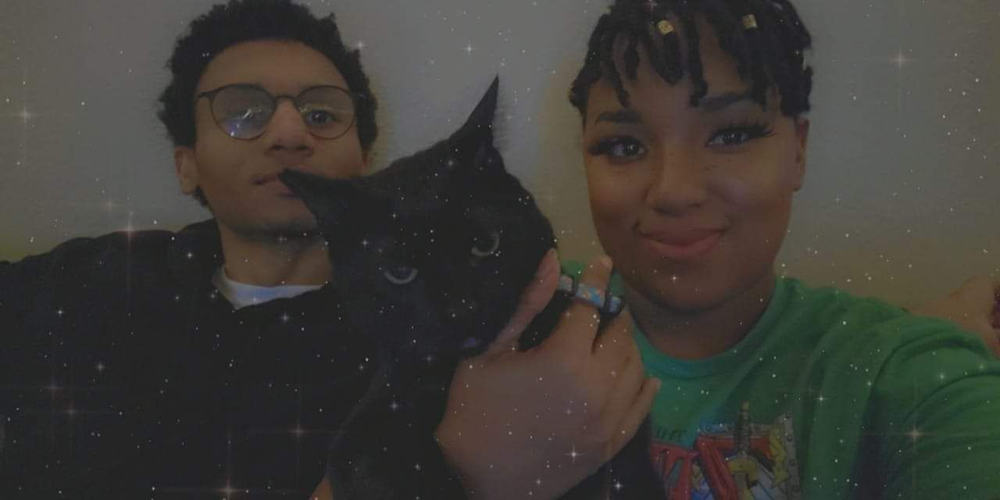

Family & Brief Backstory
In the above picture is the night my Wife (Christina) and I got Married. We both love video games and connected because we were both from the same professional development program, called Year Up. She is the love of my life and I dedicate my life to her.
We moved across the country from Chicago, IL to Dallas, TX to chase dreams and build a life together.
We picked up a little cat fella named Apollo, and he became part of the family, zooming around the little apartment we had at the time and filling us with more joyful moments. He has a grumpy face, but he is very sensitive and requires a lot of head scratches.
Above is my favorite picture of Apollo, it always makes me laugh. He looks done with my BS lol.

This is a recent picture featuring our new cat Mulan (Left)! She is very timid and we are still working with her so she can be more comfortable, she was found as a baby in a parking lot and has trouble trusting humans. After being with us for a while she is warming up and even plays & cuddles with Apollo (Right).